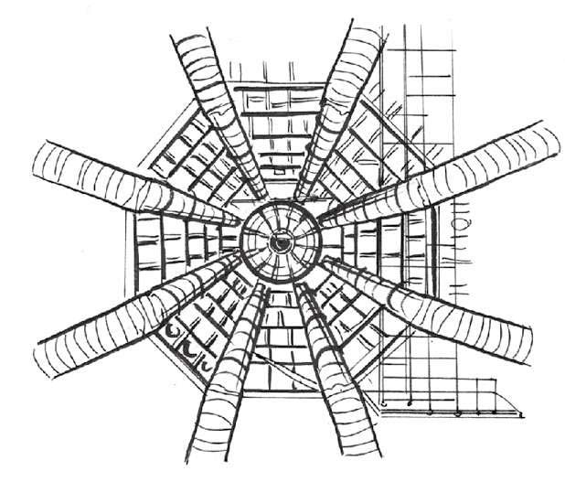
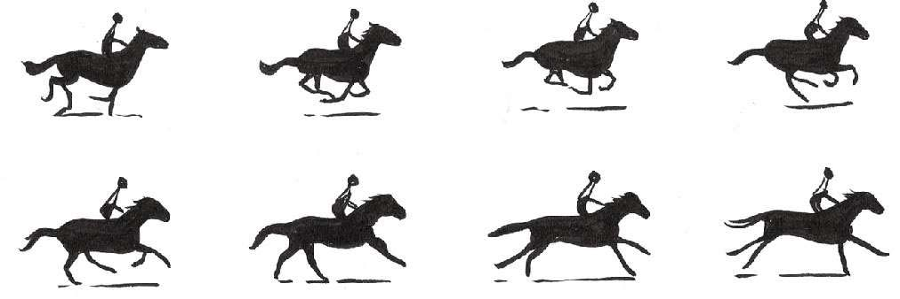

人们对时间旅行的向往已有上千年历史。已知最早的时间旅行（更确切地说是空间或者维度间旅行）故事可追溯到公元前8世纪的印度神话。梵文史诗《摩诃婆罗多》（Mahabha r ata ）中有这样一个故事：国王黎瓦陀（Revaita或Raivata）上天去会见创世者大梵天，当他回到人间时发现已经过去很多年。
爱因斯坦关于相对论的著作对于我们如何看待时间和时间旅行产生了极其深刻的影响。他提到时间流逝的速度取决于你移动的速度。如果移动速度很快，时间就会变慢，这个理论已经得到证实。在一项实验中，科学家将两个时钟同步，将其中一个放到飞机上。飞机起飞、高速飞行后减速、降落，结果飞机上时钟的时间要比静止的时钟稍慢，因为运动中的时钟运行速度减慢。实验中两个时钟的时间差异极其细微，但这种差异确实存在。根据爱因斯坦的理论，两个时间都正确。
俄罗斯宇航员谢尔盖·克里卡列夫（Sergei Krikalev）曾创造了在太空累计停留时间最长的纪录 [2] ，共803天（2.2年），在其太空考察生涯中，最长一次连续停留438天。由于他不可思议的运动速度（大约27 358千米/小时），跟我们普通人相比，克里卡列夫实际上已经进入了未来。此外，他还保持着进入未来时间旅行的纪录——整整20毫秒。
如今，物理学家们对于时间旅行的可能性信心倍增，只是时间旅行的条件非常难以创造和实现。方法包括以光速运动、使用宇宙弦或黑洞，也可以在时空连续介质（虫洞）上撕开一条缝跳进去。
瑞士的大型粒子对撞机中到底发生了什么，我们大多数凡人完全难以理解。实验中各种事物的名称和描述实验的语言就像火星文：希格斯玻色子（Higgs boson）、大型强子对撞机（Large Hadron Collider）、欧洲核子研究组织（CERN）和上帝粒子（God Particle）这样的术语似乎都能够相互替换。说明一下，欧洲核子研究组织（粒子物理学欧洲实验室，位于日内瓦）的大型强子对撞机（即超级粒子对撞机）正在致力确认希格斯玻色子（上帝粒子）的存在。
物理学家假设，宇宙在超高温的大爆炸之后开始冷却，我们复杂的宇宙和支配宇宙的物理定律在随之不断改变。现在，通过在大型强子对撞机27千米的环状隧道以惊人的速度将亚原子粒子对撞，物理学家们希望重现宇宙前时代的超高温状态，以便了解当时发生了什么。该研究旨在发现宇宙在变得如此复杂前的简单状态。
科学家们想要发现的事物包括可以组成暗物质（一种被认为是产生重力并让一切各就其位的东西）的粒子，当然还有希格斯玻色子，这种粒子创造了一种宇宙蜜糖 [3] ，赋予其他粒子质量。为此，物理学家努力重现宇宙形成之初的状态，每秒要进行多达6亿次的实验。2012年7月，有人发现了一种与希格斯玻色子接近的粒子，然而在本书撰写的时候，物理学家依然对这一发现持保留态度。

真真正正活在过去
美国艺术家大卫·麦克德莫特（David McDermott）拒绝承认自己活在“现代”。他住在爱尔兰都柏林一套19世纪的老房子里，没有现代化设备，周围摆满了旧时代的老物件，穿得像哥特小说中的乡绅，戴个大礼帽。他用老式家具重新布置了房间（不过他还是有一台老式黑色胶木电话）。他说：“我已经看到未来，但我不想前行。”因为拒绝使用网络或信用卡，大卫需要用钱时必须从银行取现金。
他与艺术家彼得·麦高夫（Peter McGough）长期合作，创作了一系列绘画、摄影、雕塑和电影作品。他们摒弃现代工艺，采用历史手法完成这些作品，并将各个历史时代混杂在一起——“破坏线性时间系统”。我最喜欢其中的一幅巨画，前景是维多利亚时代的一场花园聚会，而背景是史前恐龙和冒烟的火山。
美国最大的铁路公司老板、狂热的赛马爱好者利兰·斯坦福（Leland Stanford）对马的奔跑姿势十分好奇，他想知道马奔跑时是否四蹄离地。为此，他聘用摄影师埃德沃德·迈布里奇（Eadweard Muybridge）用一种全新的方法捕捉马的动作。1878年，迈布里奇在一条赛马跑道上拉了24条绊线，用来捕捉奔马的动作。最后的照片显示马确实有四蹄离地的时候。他拍了很多这种连续的照片，通过冻结时间来演示微小的动作。当通过投影仪快速显示这些连续的照片时，我们得到了最早的“电影”。

如今，冻结时间的实验已经变得相当复杂。为了实现一种新的时间旅行方法，哈佛物理学家莱娜·韦斯特高·豪（Lene Vestergaard Hau）一直在进行各种实验，不过这种时间旅行并不涉及人类。
豪将室温下的钠加热，使其原子运动加剧。加热到350℃时钠原子会变成蒸汽。然后她让钠原子穿过一个针孔，同时用一束激光击打钠原子，减慢它们前进的速度。该过程将原子陷在了“光学蜜糖”中，即减慢它们的速度，直到最终被电磁体冻住。此时，500万到1 000万个原子化成一小朵云，比任何已知物体的温度都低，形成一种全新的物质状态。然后，韦斯特高·豪将一束光射到这朵冷原子云上。结果光速从299 337千米/秒降到了24千米/小时。这束光穿过原子云后，速度立即恢复。
光速还可以进一步减慢，甚至可以完全停止，如同冻在一块冰中一样。不仅如此，豪还可以让光静止在一个地方，在另一个地方重新开始传播。有关光的所有信息都保存在原子中，形成一种物理物质拷贝。这束光可以永久保存下去，在需要时可以再重新激活，于是这束光所在的那个时刻就这样被冻结在时间中。
讲完这么多科学故事，该讲讲科幻故事了。下面是我从流行文化中挑选的十大时间旅行者。
这两位弹吉他的加利福尼亚怪咖遇到一位来自未来乌托邦（在那里他们被当作神来崇拜）的人。为了帮助他们通过一场重要的历史考试，他带着他们搭乘时光机到不同时代。
巴克·罗杰斯这个形象创作于20世纪20年代，首次搬上电视荧幕是20世纪50年代。20世纪70年代晚期，他是观众最难忘的时间旅行者之一，这要归功于他那条超级贴身的紧身连衣裤。1987年，空军飞行员巴克·罗杰斯昏迷不醒，在太空中漂浮504年后苏醒。当时已是25世纪，地球遭到邪恶星球德拉科尼亚（Draconia）的攻击，他在搞笑机器人Twiki和智能计算机西奥菲勒斯（Theopolis）博士的协助下保卫了地球。堪称经典。
在第一部由克里斯托弗·里夫（Christopher Reeve）主演的《超人》电影（1978年上映）中，超人能够回到过去拯救他爱的女人。超人回到过去的方法是沿地球自转的反方向高速飞行，直到逆转地球的自转，因而逆转时间。仅供参考。
这是大家最喜欢的吝啬鬼，出自大家最喜欢的圣诞故事——狄更斯的《圣诞颂歌》（A Christmas Carol ）。斯克鲁奇在一些圣诞“鬼魂”的帮助下在过去、现在和将来之间来回切换，学习到人与人之间的慷慨和爱。
物理学家制造出时间机器后，对时间机器进行测试，实验出错导致物理学家跃入过去，进入不同人的身体，一桩接一桩改变过去他们身上发生的坏事。物理学家有一位以全息影像显示的朋友，负责告诉他所处时代的历史信息。所以第6位时间旅行者是超乎想象的电视剧《时空怪客》（Quantum Leap ）的男主角——山姆·贝克特。
在电影《人猿星球》（Planet of the Apes ）第一部（1968年）中，查尔顿·赫斯顿（Charlton Heston）扮演的乔治·泰勒是一位宇航员，他因迷路进入未来，结果发现地球被智慧、残忍、会说话的人猿占领。
《回到未来》（Back to the Future ）中的滑板少年马丁·麦克弗莱是一代人的英雄，他试图从利比亚恐怖分子手中逃脱时，不慎驾驶一辆时间旅行车回到了1955年。在那里他意外地破坏了他父母的初会，差点让自己没法出生。他在争分夺秒回到1985年的同时想方设法让他俩相识相恋。在这个系列的第二部中，马丁在自己创造的错位现实中，与未来的自己相遇；而在第三部中，马丁回到了狂野的西部。
阿诺德·施瓦辛格（Arnold Schwarzenegger）说“我会回来”时，他是认真的。他在《终结者》电影系列的前三部扮演机器人杀手，从未来被派往过去或现在去保护或者除掉未来的起义领袖约翰·康纳（John Connor）的母亲和他本人。最重要的是，这系列作品中所有的时间旅行者都一丝不挂。
博士不仅是个时间旅行家，还是时间领主。他从1963年起乘坐蓝色警用电话亭穿越时间和空间，开始各种各样的冒险活动。作为播出时间最长的电视连续剧，《神秘博士》（Doctor Who ）已经迷住了好几代人，人们普遍认为它是有史以来最成功的科幻系列作品。
这位绅士发明家来自英国萨里郡里士满（Richmond），是赫伯特·乔治·威尔斯（H. G. Wells）著名科幻小说《时间机器》（The Time Machine ）（1895年）的主角。人们认为此书普及了时间旅行的概念，“时间机器”这个词也是它的首创。在测试他的新发明时，时间旅行者来到了公元802701年，在那里他遇到了埃洛伊人，他们因为有着先进的技术，饱食终日、举止散漫、不求上进。也许将来赫伯特·乔治·威尔斯会被当作预言家，因为未来的埃洛伊人和我们现在的沙发土豆 [4] 文化惊人地相似。
时间旅行锦囊
用负能量开启一个虫洞，看看它能带你去往何处
给出这个锦囊的难度要比其他锦囊稍微大一些。不过还好，作为本书读者的你应该不是实验物理学家。所以我的建议是找一位实验物理学家交朋友，最好找一位研究怎么使用负能量开启虫洞的学者。
此领域还处于理论阶段，从没有人发现过虫洞，但是谁又知道未来几年会发生什么事呢？包括史蒂芬·霍金（Stephen Hawking）在内的物理学家都相信虫洞的存在。
下一章将会讲到，人们普遍认为虫洞是最有可能带我们穿越空间和时间的“捷径”。可是，又有谁知道它们在哪里呢？人或探测器一旦发现虫洞，就会立即被它们吞没或压碎，也就无法知道虫洞的位置。要避免被压碎，我们需要速度非常快的航天器。有史以来最快的载人航天器是阿波罗10号，速度为40 233千米/小时。要及时穿过虫洞，需要比这快2 000倍的速度。小菜一碟不是吗？
[1] 音速，是介质中微弱压强扰动的传播速度。
[2] 目前该纪录已被现年57岁的俄罗斯宇航员杰纳季·帕达尔卡（Gennady Padalka）打破，他在太空累计停留时间达到879天。
[3] 物理学家将能吸引其他物质的场（因其黏性）形象地称为“蜜糖”。
[4] 整天躺在沙发上看电视的人被形象地称为“沙发土豆”。